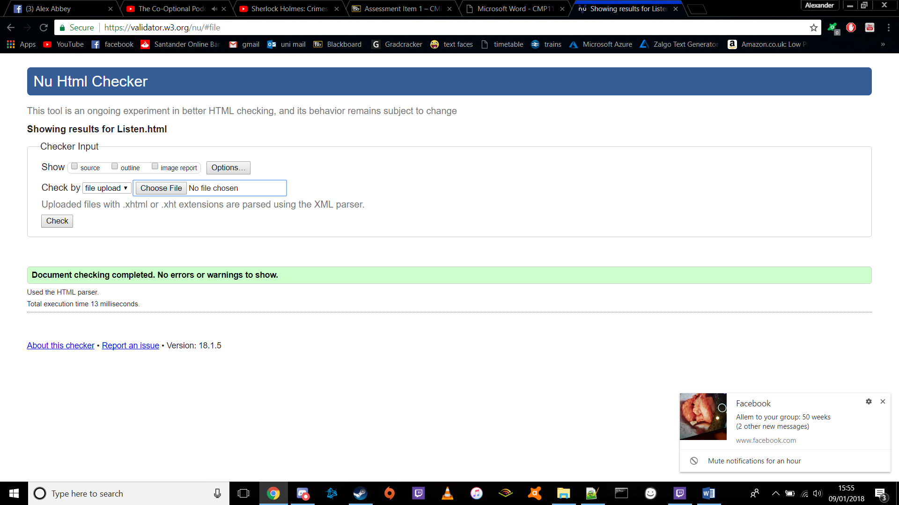
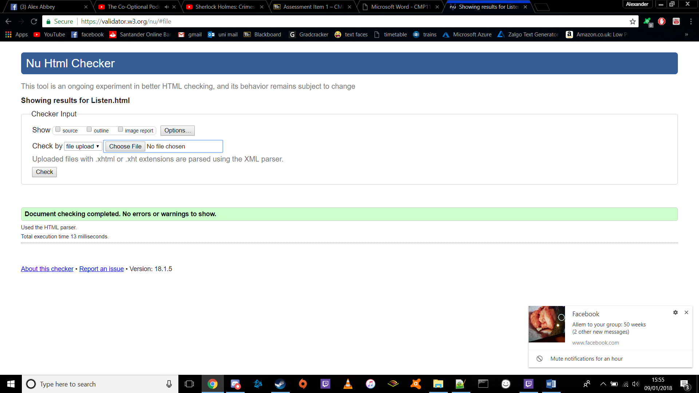
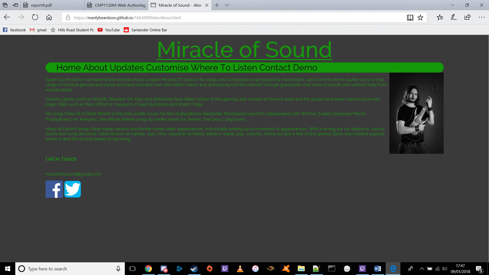

As part of my initial research process, I considered several of Gavin Dunne’s pages and websites to get an understanding of the branding and layouts that fans would be used to.
It is a common theme for his logo to be presented large at the very top of the page, directly above a central navigation bar where all the main pages were directly accessible from each other. The central nav bar is important as it allows users to manoeuvre around the site quickly and without confusion.
Having a consistent font and colour scheme is equally vital, for while the music is largely varied the brand must remain stable to keep the user from becoming overwhelmed. The same is true for the layout and button styling.
To this end I created both the navigational bar and the buttons with rounded corners, and ensured that they would both be changed in the same way should the user enter a custom colour scheme. Similarly with the main logo, I used plain text with the Railroad font rather than an image; this enabled the colour scheme changes to affect it the same way as the text throughout the site. Use of local storage allowed any changes to the scheme to carry over to all pages.
 

The only issue here is the colour input on the Customise page, however I have tested this on a few browsers and found it to be fine, so I am content to continue regardless as all other pages are fully validated. This would obviously require rectification were the site to become compatible for all browsers
The text and navigation bar condense themselves for smaller windows (as a liquid layout), and the CSS contains a media query to appropriately reshape and reorder the site for screens of a mobile size. This allows the user to reshape the window and still see the site without having to scroll sideways.
I have also ensured that my code is accepted by the main browsers, using vendor prefixes where appropriate, and have avoided such things as JavaScript classes which are not supported on outdated browsers like Internet Explorer (as shown below).
The sitecache follows a logical structure, making it easy to locate, add, and remove files
The site is shown to be compatible across these four browsers, on pc and mobile.
Messenger(mobile)
Safari(mobile)
Chrome(pc)
Edge(pc)
Clear indentation and naming conventions have been used to increase the code’s readability. Text elements have been structured as paragraphs for this reason also, as it otherwise has no effect on how it will be presented on the site.